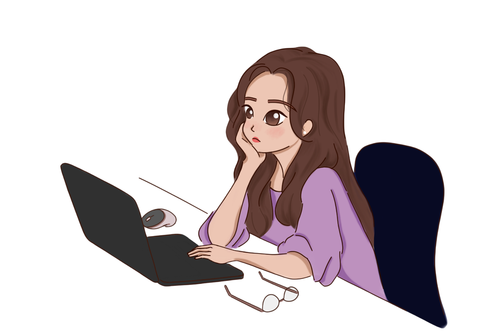

Hello! My name is Kaylie Chen and I'm in my third year of biomedical engineering at the University of British Columbia. I'm currently working on my skills in biomechanics, systems and signals, and programming, hoping to be able to bridge the gap between engineering and the medical feild. In my free time, I like to play around with frontend design and explore different mediums of art. I created this website to better showcase my projects as a portfolio, but to also introduce myself in more raw and genuine version of who I am. I'm always looking for new opportunites to learn and grow, so feel free to reach out!
Description: A personal portfolio website showcasing my skills, projects, and experience. Built using HTML, CSS, and JavaScript.
Description: A web application that allows users to manage their tasks and to-do lists. Built using React and Node.js.
Description: An online store that sells various products. Built using Django and PostgreSQL.
If you would like to get in touch with me, please feel free to reach out via LinkedIn or email. I look forward to connecting with you!